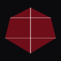

Gemstones for Chinese Zodiac Signs
Find your lucky gemstone according to Chinese astrology and how wearing it may positively influence your life.
RAT
Years: 1924, 1936, 1948, 1960, 1972, 1984, 1996, 2008, 2020
Garnet is considered a lucky gemstone for Rats. It is said to bring courage, stability and success.
OX

Years: 1925, 1937, 1949, 1961, 1973, 1985, 1997, 2009, 2021
Jade is believed to bring good luck, success and prosperity for Oxen.
TIGER

Years: 1926, 1938, 1950, 1962, 1974, 1986, 1998, 2010, 2022
Sapphire is understood to bring fortune, success and protection to Tigers.
RABBIT

Years: 1927, 1939, 1951, 1963, 1975, 1987, 1999, 2011, 2023
Pearl is believed to bring luck, wealth and protection to Rabbits.
DRAGON

Years: 1928, 1940, 1952, 1964, 1976, 1988, 2000, 2012, 2024
Amethyst is considered to bring luck, success and spiritual growth to Dragons.
SNAKE

Years: 1929, 1941, 1953, 1965, 1977, 1989, 2001, 2013, 2025
Opal is seen as lucky for Snakes, linked with wisdom and protection.
HORSE

Years: 1930, 1942, 1954, 1966, 1978, 1990, 2002, 2014, 2026
Topaz is considered to bring luck, success and abundance to Horses.
SHEEP
Years: 1931, 1943, 1955, 1967, 1979, 1991, 2003, 2015, 2027
Emerald is viewed as lucky, fostering prosperity and peace for Sheep.
MONKEY

Years: 1932, 1944, 1956, 1968, 1980, 1992, 2004, 2016, 2028
Turquoise is believed to bring luck, success and protection to Monkeys.
ROOSTER

Years: 1933, 1945, 1957, 1969, 1981, 1993, 2005, 2017, 2029
Citrine is considered lucky for Roosters and attracts abundance.
DOG

Years: 1934, 1946, 1958, 1970, 1982, 1994, 2006, 2018, 2030
Diamond is associated with success, clarity and resilience for Dogs.
PIG
Years: 1935, 1947, 1959, 1971, 1983, 1995, 2007, 2019, 2031
Moonstone is linked with good fortune and tranquility for Pigs.